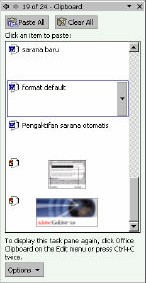
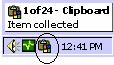
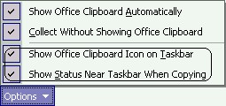
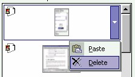

Office Clipboard
Pada bagian sebelumnya kita membahas tentang penyalinan dan pemindahan teks.
Untuk bisa menyalin atau memindah teks atau objek lain (misalnya gambar),
FrontPage XP menggunakan task pane dengan topik Office

Gambar 4.16 Office Clipboard
Objek bisa berupa teks atau gambar. Sumber objek bisa dari FrontPage XP sendiri,
bisa juga dari program lain di Office (misalnya ExcelXP), atau dari program lain di
luar Office (misalnya Visio).
Office Clipboard bekerja dengan metode Copy dan Paste. Objek-objek tersebut akan
tetap tersimpan di Office Clipboard selama masih ada program office yang aktif,
baik Word, Excel, Frontpage, Power Point maupun Outlook.
Office Clipboard bisa tampil secara manual maupun otomatis di task pane.
9.1 Cara manual mengaktifkan Office Clipboard
Secara manual Anda bisa membuka Office Clipboard dengan tiga cara, yaitu:
• mengaktifkan Edit a Office Clipboard
• menekan CTRL + C dua kali
• klik ganda icon Clipboard ( ) pada task bar windows

Gambar 4.17 Icon clipboard di taskbar Windows
9.2 Cara otomatis mengaktifkan Office Clipboard
Selain cara manual, Office Clipboard juga akan terbuka secara otomatis apabila kita
melakukan hal-hal berikut ini:
• Menyalin atau memotong dua objek yang berbeda pada satu program Office.
• Menyalin objek, menempel objek lalu menyalin objek lain pada program
Office yang sama.
• Menyalin satu objek dua kali.
9.3 Mengatur perilaku Office Clipboard
Kalau Anda membuka Office Clipboard di task pane salah satu program misalnya
Excel, maka Office Clipboard tidak secara otomatis muncul di Word atau program
Office lain yang juga akan Anda buka.
Kalau Office Clipboard belum muncul secara otomatis (karena keadaan syaratnya
belum terpenuhi), bukan berarti Anda tidak bisa melakukan penyalinan sebuah
objek. Sebagai gantinya, FrontPage XP akan menampilkan pesan proses penyalinan.
Tampilnya icon maupun pesan bisa diatur di Office Clipboard, yaitu pilihan Show
Office Clipboard Icon on Taskbar dan Show Status Near Taskbar When
Copying. Pilihan-pilihan ini ada di bagian Tasn Pane.

Gambar 4.18 Pilihan Office Clipboard
9.4 Menghapus item
Seluruh item bisa Anda hapus sekaligus dengan klik tombol Clear All ( ).
Untuk menghapus item tertentu, caranya:
1. Tampilkan item tersebut pada layar.
2. Letakkan pointer mouse di atasnya, muncul tombol anak panah ke bawah.

Gambar 4.19 Menghapus item
3. Klik tombol tersebut, lalu klik perintah Delete.
Kalau Anda menutup semua program office yang sedang terbuka, maka item-item
tersebut akan dihapus dari Office Clipboard.
9.5 Item baru
Office Clipboard mampu menampung sampai 24 item/objek. Kalau Anda menyalin
item ke 25 maka item pertama akan dihapus.
Item baru yang masuk ke Office Clipboard akan diletakkan pada urutan paling atas.
Masing-masing item akan disertai iconnya masing-masing.
9.6 Memindah sebuah item
Teks atau item yang telah Anda pilih bisa Anda pindahkan ke lokasi manapun di
dalam bidang ketik. Caranya dengan drag-drop, yaitu klik item terpilih lalu drag ke
lokasi baru lalu lepaskan tombol mouse (drop).
Kita juga bisa memindahkan teks atau item terpilih dengan cara Cut – Paste , sebagai
berikut:
1. Jika item belum terpilih, pilihlah lebih dulu.
2. Tekan tombol Cut pada toolbar. Teks terpilih akan terhapus (dipindahkan ke
Clipboard).
3. Pindahkan pointer ke lokasi baru (tidak hanya pada bidang ketik yang sedang
tampil, bisa ke halaman lain, ke dokumen lain, bahkan ke program lain).
4. Pada lokasi baru tersebut, klik tombol Paste ( ). Maka objek yang terhapus
akan muncul di lokasi baru tersebut.
Anda bisa menerapkan drag-drop maupun Cut-Paste untuk perpindahan item dari
dua program aplikasi, misalnya dari Internet Explorer ke Word 2002.
9.7 Menyalin sebuah item
Untuk menyalin sebuah item, langkahnya sama dengan di atas, kecuali pada langkah
pertama. Yaitu tekan tombol Copy sebagai pengganti tombol Cut. Cara ini dikenal
juga sebagai Copy – Paste. Selengkapnya sebagai berikut:
1. Pilihlah item.
2. Tekan Copy, atau CTRL + C.
3. Letakkan pointer di lokasi baru.
4. Tekan Paste, atau CTRL + V.
Anda juga bisa menggunakan Office Clipboard untuk memindah sebuah item, yaitu:
1. Pilih item lalu Cut. Item akan berpindah ke Office Clipboard.
2. Letakkan pointer di lokasi baru.
3. Pada Office Clipboard klik item tersebut. Salinan item akan ditempelkan ke
lokasi baru. Item yang sama masih ada di dalam Office Clipboard.
Sedangkan untuk menyalin sebuah item dengan Office Clipboard:
1. Pilihlah item lalu salinlah (misalnya dengan CTRL + C).
2. Letakkan pointer di lokasi baru.
3. Pada Office Clipboard klik item tersebut. Salinan item akan ditempelkan ke
lokasi baru. Item yang sama masih ada di dalam Office Clipboard.
Untuk item berupa tabel, pada dasarnya sama saja, yaitu Anda bisa menggunakan
drag-drop, Cut-Paste/Copy-Paste maupun dengan Office Clipboard. Yang perlu
Anda perhatikan adalah cara pemilihan tabelnya saja, yaitu:
1. Letakkan pointer di atas tabel (tidak perlu klik), muncul move handle ( ) di
pojok kiri atas.
2. Klik move handle, tabel akan terpilih.
3. Selanjutnya Anda bisa memindah/menyalin tabel dengan cara yang Anda sukai.
Khusus untuk menyalin dengan drag-drop, Anda harus menekan CTRL selama
melakukannya.
9.8 Menyalin banyak item
Untuk bisa menyalin banyak item langsung, lakukan hal berikut ini:
1. Salinlah item-item, misalnya dengan CTRL + C beberapa kali. Anda bisa
menyalin sampai 24 item.
2. Letakkan pointer di lokasi baru.
3. Pada Office Clipboard klik tombol Paste All.
9.9 Menggagalkan perintah
Jika Anda membuat kesalahan, Anda dapat membatalkan pengeditan dengan
mengaktifkan perintah Edit _ Undo atau menekan Ctrl+Z.
Perintah Ctrl + Z adalah perintah yang umum, berlaku untuk menggagalkan perintah
apapun pada aplikasi windows.
Copyright © Herlan Lesmana
Created with the Freeware Edition of HelpNDoc: Full featured Documentation generator